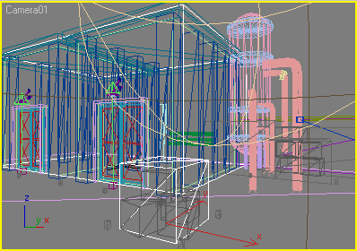

You are probably already familiar with the scene creation process in WME. If not, go and read the Scene creation tutorial. 3D characters support builds on the same principles but adds several new steps.
Unlike the 2D characters, the actors are not composed by a bunch of sprites. The
3D actor is represented by a 3D model. WME supports the Microsoft X format for
storing models. There are X exporters for most major 3D modeling packages. See
this
WME Wiki page for up-to-date information on X file creation in various 3D
programs.
WME uses so-called skeletal animations to animate the 3D models. You define a set of bones (the skeleton) and then attach parts of your model (the skin) onto various bones. Rotating and moving the bones will then make the skin bend appropriately. If this approach is new to you, see the documentation and tutorials for programs like fragMOTION or Milkshape 3D for more details on how to create skeletal animated characters.
Among the 3D model itself, you will need to create an actor definition file,
describing various properties of the 3D actor to WME. The structure of this file
is described in another chapter of this documentation.
Once you have both the 3D model in X format (.x) and the actor
definition file (.act3d), WME is ready to use your character in a game. To load
the character from a script, you will call the
Game.LoadActor3D()
or
Scene.LoadActor3D() methods. The usage is exactly the same as for the old
LoadActor method used for 2D characters.
A word of warning: Keep the polygon count of your character models as low as
possible (generally a few thousands of triangles). It requires a lot of skill to
create a good looking low-poly character, but it's necessary for real-time
rendering. In other words, forget about Poser models and such, because they are
far too detailed to be used in real-time 3D environment.
Also make sure the dimensions of the textures you use are powers of two (2, 4, 8, 16, 32, 64, 128, 256, 512, 1024...). This is a limitation of current 3D accelerators. Normally when using 2D graphics WME overcomes this limitation by resizing the images automatically but in case of real-time 3D models you will have to deal with it yourself.
Using textures larger than 1024 pixels is not recommended, because some older video cards cannot handle them correctly. On the other hand, you will probably rarely need larger textures for 3D characters.
Unlike the ordinary 2D scenes, you will need to add an extra layer to your scenes to support hosting 3D characters in them. This layer is called the "hidden scene geometry". Basically it's a simple 3D model which defines the 3D layout of your scene. It defines the walk-planes and blocked objects. Although this 3D model is never actually visible to the player, the 3D characters are using it to navigate the scene. They are walking on invisible 3D planes and they avoid hidden blocked objects.
Once again, this hidden geometry has to be created in some 3D modeling software and then saved in the 3DS format. 3DS is the only format WME accepts as scene geometry. This format is very popular and you should be able to export is from most 3D packages.
The hidden geometry file contains the following components:
As you can see, the geometry already contains the information used for
navigating actors within the scene. Therefore you don't have to use the blocked
regions, normal waypoints and scale levels as described in step 4 and step 5 of
the Scene creation tutorial, these are
superseded by scene geometry. Other than that the scene designing process is
exactly same as described in the tutorial.
Now, how to create the hidden geometry? The idea is that most people will use 3D pre-rendered backgrounds together with real-time 3D characters. Hardly anyone would want to combine them with hand-drawn locations. It means you already have a detailed 3D model of the scene, including camera and lights setting. All you need to do now is to add the walk-planes and blocked objects to the scene. They will not be used for the actual scene rendering, but they will be exported to WME.
For WME to recognize the right objects in the exported file, they need to be
named in a certain way. Walk-plane names have to start with "walk_", for
example "walk_floor", blocked object names start with "blk_", for example
"blk_desk" and waypoint names start with "wpt_", for example "wpt_01".
All lights and cameras are recognized automatically.
To define the hidden geometry, create planes where characters can walk, then create objects bounding inaccessible areas. Typically these blocked objects will be simple cubes surrounding some scene objects and areas that cannot be entered by actors. For example see the scenes in WME 3D demo. Both the warehouse and the crates in foreground are surrounded by cubes, making those areas inaccessible for the characters.
Waypoints are typically created as small cubes. WME only uses one point from the cube as the actual waypoint and it also drops the waypoints to the floor. The rules for correct waypoint placement are basically the same as for normal waypoints, as described in step 5 of scene tutorial. You place the waypoint at the edges of your blocked objects and there must be a direct unblocked path between two waypoints for the character to be able to use this path.
Note: Starting with WME 1.6 you can use the old good "2D way" of scene navigation even for 3D actors, to simplify scene design. See the additional 3D options chapter for more details.
New in WME 1.7: Since the introduction of stencil shadows the hidden geometry needed a bit more flexibility. Therefore it's now possible to couple the 3DS file with a second definition file, which describes additional options. The definition file is stored in the same directory as the 3DS file, uses the same filename, but with .geometry extension (for example, if your geometry file is called "some_scene.3ds", the geometry definition file would be called "some_scene.geometry").
This definition file can contain one or more sections, describing groups of meshes contained in the 3DS file. Each group is defined by a name pattern and additional properties. The name pattern can use wildcards (* for any group of characters, ? for any single character) which allows you to address several meshes at once. Then, for each group of meshes you can specify: 1) whether they are walkplanes 2) whether they are blocked objects 3) whether they are waypoints 4) whether they receive shadows. For example, to match the naming conventions described above, your geometry definition file would look like this:
GEOMETRY
{
NODE
{
NAME = "walk_*"
WALKPLANE = TRUE
RECEIVE_SHADOWS = TRUE
}
NODE
{
NAME = "blk_*"
BLOCKED = TRUE
}
NODE
{
NAME = "wpt_*"
WAYPOINT = TRUE
}
}
Notice the RECEIVE_SHADOWS line. It means the walkplanes will receive stencil shadows. You could, for example, add additional meshes to your 3DS file, to use for shadow receiving (typically you'll need more detailed scene model for shadows than you need for pathfinding). Let's assume you named these meshes with names starting with "SHADOW_". To say you want all meshes starting with SHADOW_ to receive shadows, you'd add the following section to the definition file:
NODE
{
NAME = "shadow_*"
RECEIVE_SHADOWS = TRUE
}
Since this node doesn't contain neither of the WALKPLANE/BLOCKED/WAYPOINT options, these meshes will only be used for shadow casting. WME Demo 3D is using this definition.
Note: You don't need to specify the standard mesh groups (walk_, blk_, wpt_), they are recognized automatically.
If this sounds too confusing at first, just take a look at the 3DS file in WME 3D demo, it will give you the idea of how the scene geometry should look. If you have access to 3D Studio Max, you can also open the original .MAX file (in the "original files" folder). It contains the detailed scene model together with scene geometry. Scene geometry objects are marked as invisible so that they are not rendered. Also all the scene geometry objects are stored as a named selection, to make it easy to select them all and export them into the 3DS file (using the File->Export selected command).

Keep the scene geometry objects simple (cubes, planes etc.). The simpler the objects are the faster is loading in WME and the faster can WME find paths for characters. Only export this simplified scene model, not the original detailed one, it's of no use to WME.
Cameras and lights can be exported directly as they are. You will typically use the same camera for both rendering the scene in the 3D program and for displaying 3D characters in WME. This way the 2D and 3D parts are perfectly overlaid.
Once you have exported the scene geometry into a 3DS file, all you need to do is to assign it to a WME scene. To do so, open the scene in SceneEdit, select the "3D" tab and select the 3DS file. If the file contains multiple cameras, you can select the right one. Also, you will have to fill-in the resolution your game will use. The resolution setting is used only by SceneEdit to display the scene geometry correctly.
In most cases you'll only need to set the camera and game resolution here, but there are some additional options available, described in another chapter.